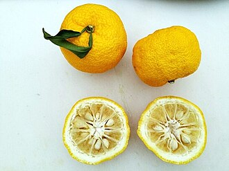

ゆずの生産量 都道府県ランキング
上位3県と収穫量
ゆずの収穫量が全国で最も多いのは高知県で、1万5,005 tです。全国（2万8,144 t）の約 53%を占めます。

| 順位 | 都道府県 | 収穫量 | 全国に占める割合 |
|---|---|---|---|
| 1位 | 高知県 | 1万5,005 t | 約 53% |
| 2位 | 愛媛県 | 4,473 t | 約 16% |
| 3位 | 徳島県 | 2,721 t | 約 9.7% |
ゆずの生産量の推移（令和3年産〜令和5年産）
全国の収穫量は、令和3年産の2万2,918 tから令和5年産の2万8,144 tへ、23%増えました。期間中、1位は一貫して高知県です。
| 年 | 全国 | 1位 | 2位 | 3位 |
|---|---|---|---|---|
| 令和5年産 | 2万8,144 t | 高知県1万5,005 t | 愛媛県4,473 t | 徳島県2,721 t |
| 令和4年産 | 1万8,131 t | 高知県9,199 t | 愛媛県1,970 t | 徳島県1,819 t |
| 令和3年産 | 2万2,918 t | 高知県1万1,769 t | 徳島県2,817 t | 愛媛県2,674 t |
この数字について
- 分類：ミカン科
- 全国の収穫量：2万8,144 t
- この数字が表すもの：収穫量（収穫された重量）
- 調査：特産果樹生産動態等調査 令和5年産
- この品目は統計に上位3産地しか載っていません。4位以下は国が公表していないため分かりません。
- 産地の量は1t単位に丸めて公表されています（全国の量は0.1t単位）。生産量が少ない品目では、丸めの影響で産地の数量が全国を少し超えることがあります。割合に「約」を付けているのはそのためです。
ゆずの生産量について、よくある質問
- ゆずの生産量が日本一の都道府県はどこですか？
- 高知県です。特産果樹生産動態等調査（令和5年産）で1万5,005 tでした。
- ゆずの生産量ランキング2位・3位はどこですか？
- 2位は愛媛県（4,473 t）、3位は徳島県（2,721 t）です。
- ゆずの全国の生産量はどれくらいですか？
- 2万8,144 t（令和5年産）です。